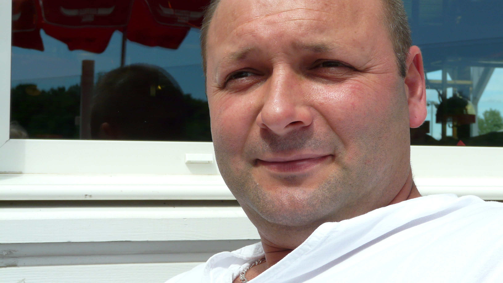

Emmanuel REGIS
Formateur Professionnel Adultes FPA
Tel 07 78 40 94 63
85540 le CHAMP st PERE
👉 emmanuel.regis1@gmail.com
CONNAISSANCES & COMPETENCES.
GESTION COMMERCIAL SAGE.
COMMERCE, COMPTABILITE.
PASSATION DE POSTES.
TECHNICIEN MAINTEANCE AUTOMOBILE.
E R P MAINTENANCE INDUSTRIEL.
GESTION DES STOCKS.
LOGISTIQUE ET PERMIS SPL.
HTML, CSS, NODE JS, MYSQL...
POWER-POINT.
EXCEL.
EXPERIENCES PROFESSIONNELLES.
🚧 EN FORMATION PROFESSIONNELLE.
08/2022 - 07/2023 - Actuellement.
En formation FPA Chez RETRAILLER dans L'OUEST DE LA ROCHE SUR YON.
- En stage du 06 Mars au 24 Mars 2023 Au Lycée Éric-TABARLY des SABLES D'OLONNES.
Auprès de Formateurs Maintenance Automobile, Maintenance Bateau, Chaudronnereie, et Menuiserie.
- En stage du 29 Mai au 09 Juin 2023 au Lycée Éric-TABARLY des SABLES D'OLONNES. des SABLES D'OLONNES.
Auprès de Formateurs Maintenance Automobile, et Maintenance Bateau.
- Passage du TITRE FPA? LE 11 JUILLET 2023.
🚧 Digital Entrepreneur- CEO Créateur d'Entreprises.
2019- 2021
Créateur sites vendeur E-commerce, blog, vitrines d'entreprise sur le web.
- Affiliation, dropshipping.
- Hebergeurs, IONOS, HOSTINGER, OVH, HOSTGASTOR.
- Catalogue interactif en ligne.
- Veille Commerciale....
- Terminal de Payments & PayPal intégrations.
🚧 Technicien d'Atelier.
2019 - 2020
Entreprise SNOCI Charpente (85) st Vincent sur Graon.
- Maintenance Industriel.
- Production, logistique.
- Préparation de commande, Expédition.
🚧 Manager Commerce dans le monde l'automobile.
1998 - 2019 Pendant 20 Ans
Entreprise SOLOGNE PNEUS (45) Bonnée.
- Gestion Commerciale, comptabilité, Accueille Clientèle.
- Création de poste, formation de collaborateurs.
- Commerce et Négoce de véhicules, et pèces automobile, et poids lourds...
- Maintenance Automobile, Poids lourds...
- Logistique, Expédition, Recyclage, Import-Export.....
🚧 Chef d'Entreprise.
09/1991 - 06/1998
Entreprise personnelle dans le négoce, Chasseur de marchandise Import Export.
- Gestion Commerciale, comptabilité, Accueille Clientèle.
- Création de postes, formation de Collaborateurs.
- Commerce, de gros et demi gros, Négoce de véhicules, et pièces détachées automobiles, et poids lourds...
- Maintenance Automobiles, Poids lourds...
- Logistique, Expédition, Recyclage, Import-Export.....
🚧 RESPONSABLE DES ACHATS.
07/1985 - 03/1991
Entreprise GAUTH-PNEUS / FRANCE-PNEUS SA.
- Responsable des achats, de parc et gestionnaire de stocks dans une
usine de rechapage de pneus.
- Vendeur en centre auto et itinérant.
- Technicien centre auto, gestion d'entretien des véhicules de parc.
- Magasiner, préparation de commandes 1985-1986.